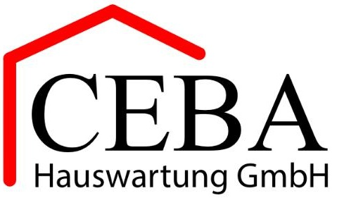

CEBA Hauswartung GmbH
- Telefon
- 056 249 00 00
- info@ceba-hauswartung.ch
Öffnungszeiten
Montag bis Freitag
Webermühle · Neuenhof
Hier findest du die passenden Informationen und Anlaufstellen für Fragen rund um die Webermühle.

Hauswartung
Für Anliegen rund um die Hauswartung und technische Störungen ist die CEBA Hauswartung GmbH zuständig.

Montag bis Freitag
Hauswartung
Bei dringenden Problemen ausserhalb der Öffnungszeiten erreichst du den Notfallkontakt der Hauswartung unter dieser Nummer.
Wenn es sich nicht um einen echten Notfall wie zum Beispiel einen Wasserbruch oder eine andere wichtige Störung handelt, werden der Anruf und ein allfälliger Einsatz gemäss dem aktuellen Tarif der Hauswartung verrechnet.
Im Notfall
Bei akuter Gefahr oder einem medizinischen Notfall wende dich direkt an die zuständige Notfallstelle.
Anlaufstellen
Quartierverein, Verein SOFE Webi und Spielgruppe sind klar getrennte Anlaufstellen.
Quartier
Sommerfest
Familien
Für Fragen zur Spielgruppe und zu Angeboten für Kinder im Quartier.
Praktisch
Die wichtigsten Wege zu Nutzung, Belegung und Regeln.
Gemeinsame Räume
Für Partyraum, Rooftop, Fitnessraum, Schulungsraum und Gärten findest du Zuständigkeiten und direkte Kontakte auf der Räume-Seite.
Fitnessraum
Aktuelle Belegung, Anmeldung, Regeln und Kontakt zum Fitnessraum.
Für die Nutzung des Fitnessraums ist eine vorgängige Anmeldung erforderlich. Ohne Registrierung ist kein Zugang möglich.
Lernen & Austausch
Informationen zu Lernen, Austausch und Unterstützung werden hier zusammengeführt.
Im Schulungsraum finden aktuell Deutschkurse als Fremdsprache sowie regelmässig eine Mütter- und Väterberatung aus Neuenhof statt.
Gemeinsam verbunden
Die wichtigsten Hinweise, Angebote und Kontakte aus der Webermühle werden hier Schritt für Schritt zusammengeführt.
Zur Startseite